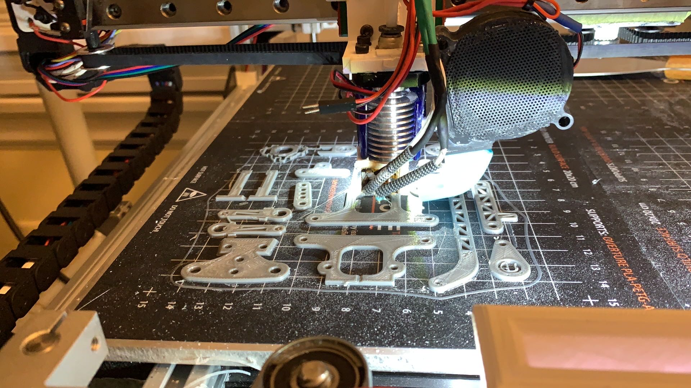
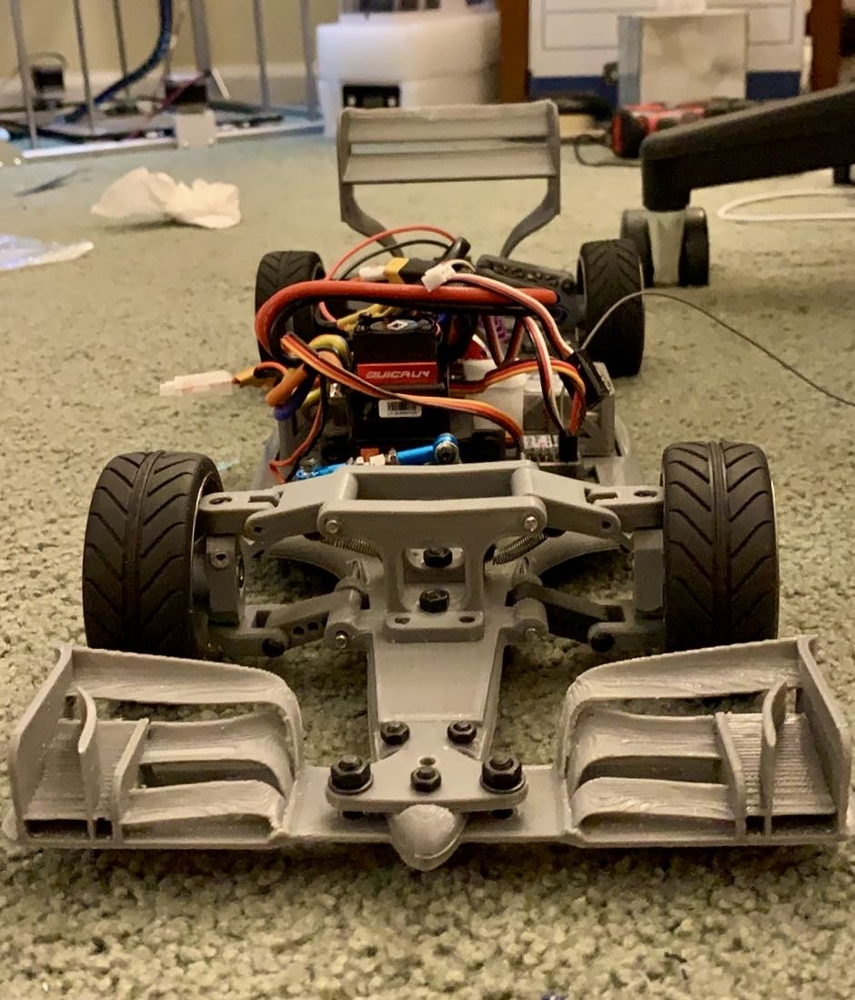
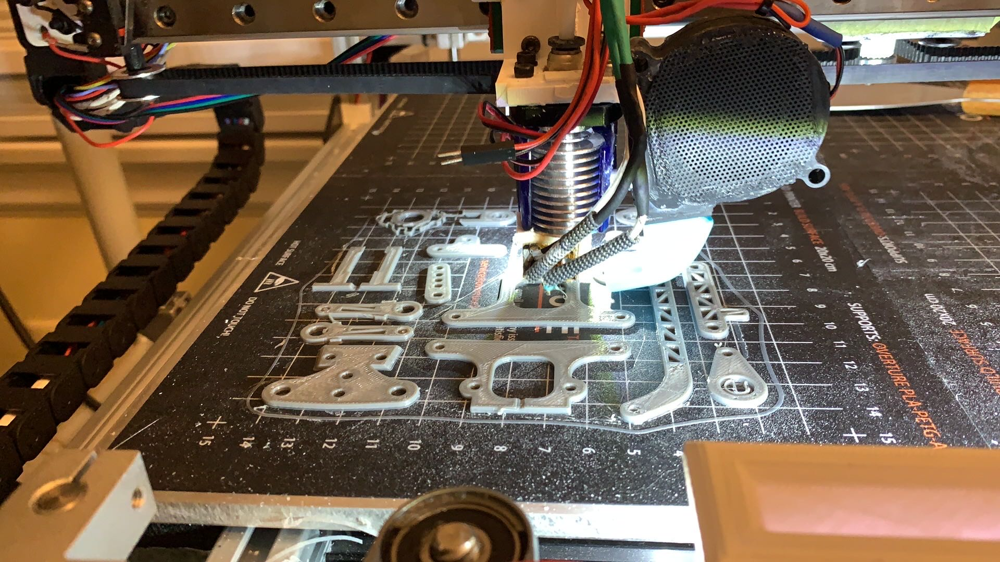
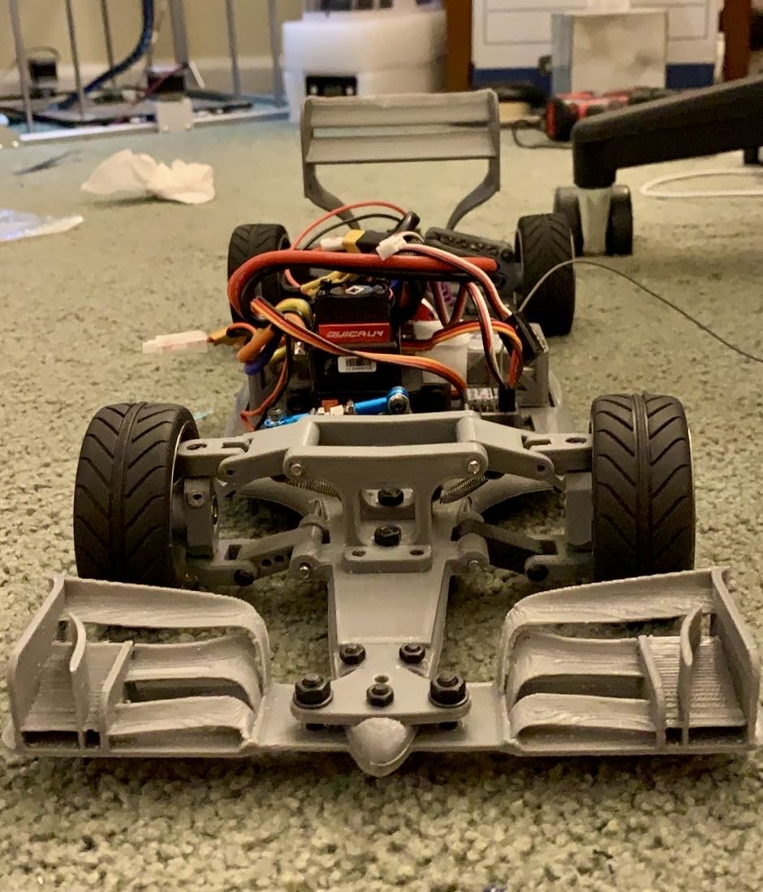

125cc Shifter Kart
A custom-built shifter kart with a 125cc engine from a motorcycle. The frame was made from galvanized steel tubes using a MIG welder and a tube bender. Built in collaboration with Jeff Luo.

Here are some of my projects.
A custom-built shifter kart with a 125cc engine from a motorcycle. The frame was made from galvanized steel tubes using a MIG welder and a tube bender. Built in collaboration with Jeff Luo.
A 3D-printed RC F1 car designed with Fusion 360, powered by a 600W (0.8HP) brushless motor and a 3S LiPo battery, with a theoretical top speed of 160 km/h. Optimized for aerodynamics using CFD simulations.

 



A custom-built 3D printer with a 40cm * 40cm * 50CM build volume. The frame was made from aluminum extrusions and 3D printed parts. Running a custom firmware with a 32-bit board.